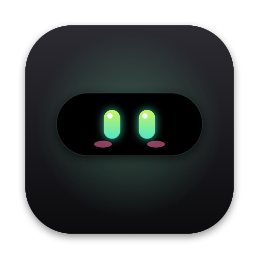
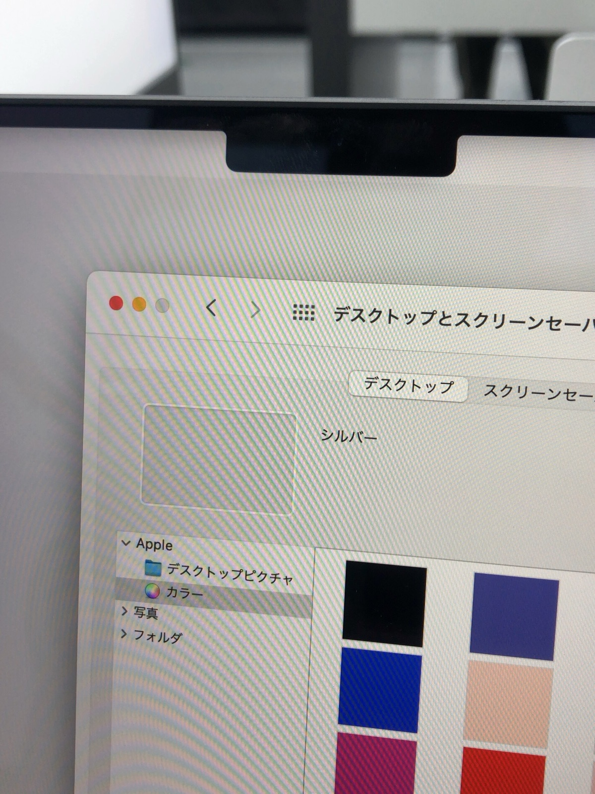

Lagu mulaiSpotify, YouTube, dll.4 detik

MeNotchNotch-muhidup.
Kotak hitam di atas layarmu sekarang bisa memutar lagu, menjaga fokus, menyimpan file, dan mengingat yang kamu salin. Plus sepasang mata yang ikut melirik.
Unduh untuk Mac
Coba dulu: arahkan kursor ke notch di atas.
Kotak hitam, nganggur.
Setiap hari kamu melihatnya. Ia memotong menu bar, menyimpan kamera, lalu diam saja. Sayang, kan?
MeNotch memberinya pekerjaan. Muncul saat kamu butuh. Diam lagi saat tidak.

Dia punya mata.
Dua mata kecil tinggal di sisi kiri notch. Mereka melirik ke arah kursormu, berkedip, tersipu kalau disapa, ngantuk kalau kamu diam 45 detik, dan berbinar saat charger dicolok. Kecil, tapi Mac-mu jadi terasa ditemani.
Coba ganti suasana hatinya
Atau klik matanya. Dia tidak keberatan.
Pilih warna favoritmu
Enam warna, sama seperti di aplikasi. Notch di atas langsung ikut berganti.
Lima tab. Satu notch.
Jam, lagu yang sedang diputar, dan agenda hari ini. Semua dalam sekali lirik.
87%
15:32Sedang fokus
FokusIstirahat
MenitDetik
202530
Jeda
3 beruntun · 1 j 15 m hari ini
Tugas 2
- Kirim invoice ke klien
- Rapikan slide presentasi
- Balas email tim desain
- Tambah tugas
Halo semuanya, terima kasih sudah bergabung hari ini.
Teks ini bergulir pelan tepat di bawah kamera, jadi mata kamu tetap ke lensa.
Minggu ini kita bahas tiga hal: rilis, umpan balik, dan rencana bulan depan.
Halo semuanya, terima kasih sudah bergabung hari ini.
Teks ini bergulir pelan tepat di bawah kamera, jadi mata kamu tetap ke lensa.
Minggu ini kita bahas tiga hal: rilis, umpan balik, dan rencana bulan depan.
Kecepatan gulir
Taruh file di siniatau klik untuk memilih · disimpan 1 jam
PDFproposal-q4.pdf54 mnt
PNGfoto-produk.png41 mnt
KEYpitch.key12 mnt
AirDrop
Riwayat clipboardTerhapus setelah 5 menit
Rapat dipindah ke jam 3 ya, ruangannya sama.
Baru saja#C8E64A1 mnt
Gambar2 mnt
Jl. Braga No. 12, Bandung
Teks4 mnt- Lagu dari Spotify, Apple Music, YouTube, dan lainnya
- Ketuk tanggal, lihat acaranya
- Kalendermu tetap di Mac-mu
Momen yang mampir.
Ada lagu mulai, file diseret, charger dicolok. Notch menyapa sebentar, lalu kembali tenang. Geser barisan ini sesukamu, ujungnya tidak ada. Coba salin teks apa saja di halaman ini.
24:59
Timer fokusHitung mundur di notchSampai selesai
DisalinRapat dipindah ke jam 3 ya
Teks disalin⌘C di app mana pun2,6 detik
87%
Charger dicolokMata berbinar, petir menyalaSaat dicolok
Lepaskan untuk menambahkanlaporan-final.pdf
File diseretRak terbuka sendiriSelama menyeret
Kamu diam dulu45 detik tanpa gerakSampai kamu kembali
DicolekKlik matanyaSekejap
Menu app penuhIsland minggir ke notch asliOtomatis
Tetap terjagaMac tidak tertidurSampai dimatikan
AirDropKirim 3 file dari Rak
Kirim lewat AirDropSemua isi RakSatu klik
Layar penuhDi atas video & slideBisa dimatikan
Charger dilepasSekarang memakai baterai · 86%
Charger dilepasKabar dari bateraiSekejap
Kecil-kecil berguna.
Tetap terbukaSematkan, dan notch tidak menutup.
Dua bahasaIkut bahasa Mac-mu.
Ngecas kelihatanPetir menyala, persen bernapas pelan, dan kamu tahu kapan penuh.
Tetap terjagaSatu ketukan, Mac tidak tertidur saat unduhan panjang.
Geser penggarisAtur timer dengan satu tarikan jari.
Password tidak disimpanIsi dari password manager dilewati. Selalu.
Tak ikut terekamNaskahmu tidak muncul saat share screen.
Geser dua jariPindah tab langsung dari trackpad.
Siap dalam dua menit.
Butuh macOS 15 Sequoia ke atasDibuat native dengan SwiftBahasa Indonesia dan English
Sering ditanya.
Mac saya tidak punya notch. Tetap bisa?
Bisa. MeNotch akan membuat notch virtual di tengah atas layar. Semua tab tetap jalan.
Izin apa saja yang diminta?
Tiga, dan semuanya boleh dilewati. Kalender untuk agenda. Folder Documents untuk menyimpan file di Rak. Aksesibilitas supaya notch minggir saat menu aplikasi butuh tempat.
Data saya dikirim ke mana?
Tidak ke mana-mana. MeNotch tidak punya akun dan tidak terhubung ke server. Semuanya tetap di Mac-mu.
Musik dari aplikasi apa saja?
Hampir semua. Spotify, Apple Music, YouTube, YouTube Music, SoundCloud, TikTok web, dan banyak lagi. Aplikasi yang bersuara tanpa info lagu tetap muncul dengan ikon dan namanya.
Berapa lama file di Rak disimpan?
Satu jam. File-mu disalin ke Documents › MeNotch, lalu salinannya dibuang ke Tong Sampah. File aslimu tidak disentuh.
Password saya ikut tersimpan?
Tidak. Isi dari password manager dilewati, dan riwayat clipboard terhapus sendiri setelah 5 menit. Mau lebih tenang? Matikan saja di Pengaturan.
Naskah ikut terlihat saat share screen?
Tidak. Tab Naskah disembunyikan dari share screen dan rekaman. Penonton hanya melihat wajahmu.
Bagaimana cara menghapus MeNotch?
Gampang. Keluar lewat ikon di menu bar, lalu pindahkan MeNotch dari Applications ke Tong Sampah. Hapus juga folder Documents › MeNotch kalau masih ada.
Sapa dia di notch-mu.
Unduh, seret ke Applications, lalu buka. Panduan singkat menemanimu sampai selesai. Tidak sampai dua menit.
Semua siap!
Arahkan kursor ke notch di atas layar kapan pun kamu butuh aku. Seret file ke sana, salin sesuatu, atau colok charger untuk melihat aku bereaksi.
Unduh MeNotchVersi 0.2.0 · macOS 15+ · 2,2 MB